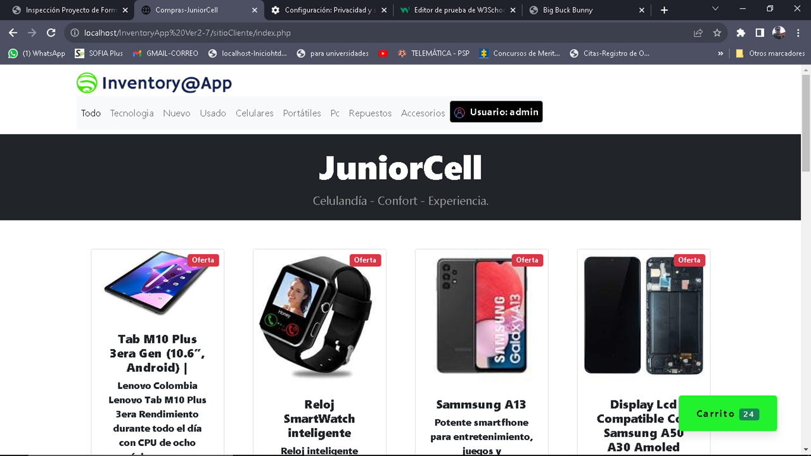

Pruebas de Caja Negra

- Prueba No. 1 :
- Prueba No. 1 :

- Prueba No. 2 :

- Prueba No. 2 :

- Prueba No. 2 :
- Prueba No. 3 :

- Prueba No. 3 :

- Prueba No. 4 :
- Prueba No. 5 :
- Prueba No. 6 :

- Prueba No. 7 :
- Administrar Artículos
- Administrar Usuarios
- Clientes
- Vender Artículo
- Prueba No. 8 :
- Prueba No. 9 :

- Prueba No. 10 :
Pruebas de Caja Blanca
Técnica del Cámino Básico
► Se necesita revisar minuciosamente el Código fuente a fin de depurarlo, puesto que se encuentran segmentos de Código aleatorio o comentado sin funcionar, esto puede causar errores o deficiencias a la hora de la ejecución del Software.
CodeMirror
- Revisión Código Fuente :